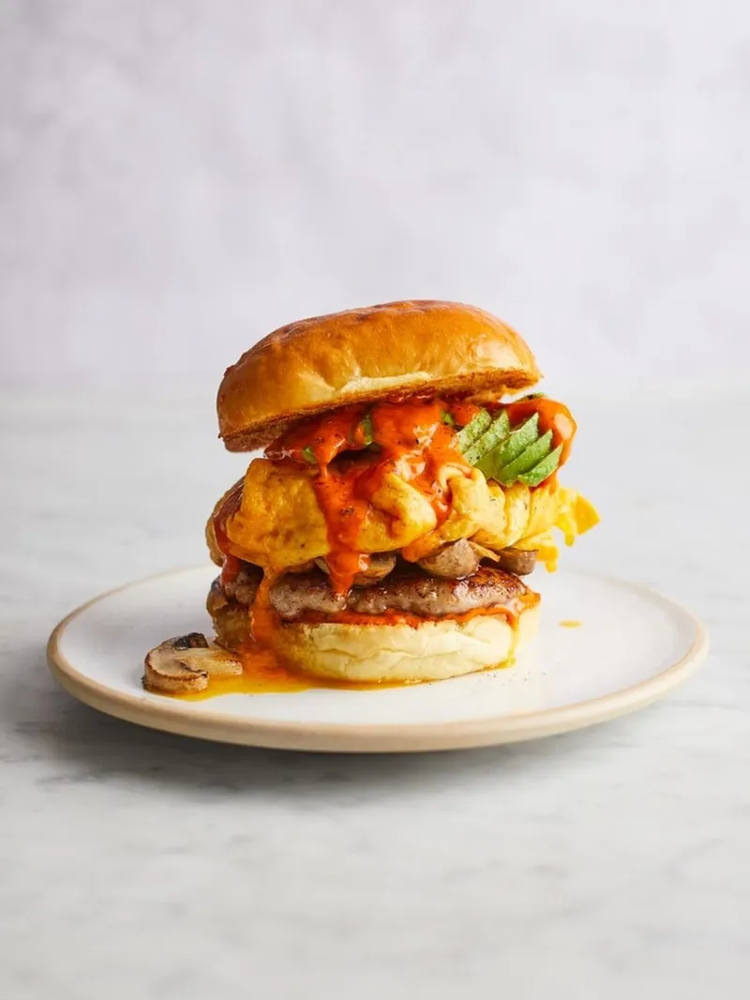

Sausage Brunch Baps

Ingredients
- 1 Sausage
- 2 Mushrooms
- Half an Avocado
- Half a Lime
- Extra Virgin Olive Oil
- 1 Brioche-style Burger Bun
- Chilli Sauce to serve
- 1 Free Range Egg
- 15g Red Liecester or Cheddar Cheese
Method
Step 1
- Place a large dry frying pan on a medium-high heat. Score 1 higher-welfare pork (or vegetarian sausage) lengthways and remove the skin, then press into a pattie shape, roughly the same size as the bun and place in the pan. Slice 2 chestnut mushrooms to 1cm thick and add to the pan.
- Cook the sausage patty for 2 minutes on each side, pushing the mushrooms into the sausage fat, until the mushrooms are golden and the sausage is cooked through.
- Meanwhile, destone and thickly slice ½ an avocado then gently fan out the slices. Squeeze over the juice from ½ a lime, drizzle with extra virgin olive oil and add a small pinch of black pepper.
- Halve 1 brioche-style burger bun, push the mushrooms to one side and toast the bun in the pan until golden.
- Spread the bun base with the chilli sauce (if using) and top with the sausage patty and mushrooms.
- Crack 1 egg into a bowl and beat with a fork. Carefully wipe out the pan and place back on the heat. Drizzle in 1 teaspoon of olive oil, then pour in the egg, tilting and swirling the pan, so the egg covers the base. Grate over 15g of Red Leicester or Cheddar cheese, then remove the pan from the heat and use a spatula to carefully flick in the sides of the egg until it's all folded into a perfectly silky omelette.
- Place the omelette on top of the mushrooms, lay over the sliced avocado and drizzle with more chilli sauce, if you like. Top with the bun lid and dig in!